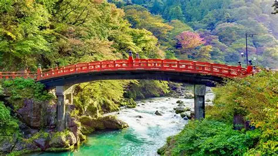

Travelogue: Japan
Overview
From ginger pork to grilled eel and tropical paradaise to snowy mountains, there is not a shortage of expereices
to have in Japan.
Land in Tokyo and experience the nightlife of one of the biggest Metro-politan areas in the world, or head west
to Kyoto and expereince a more
traditional way of life often known as the country's soul. Better yet, head North of Tokyo and explore Tohoku,
an area with few tourists but brimming with beautfiul scenery, delicious local cuisines, and
a rich culture that simply cannot be found in the big cities.
Must See Spots!
- In Tokyo: Shinjuku Gyoen National Garden and Meiji Shrine (Harajuku).
- In Nikko: Toshogu Shrine, Shinkyo Bridge, nature walks.
- In Sendai: Zuihoden Mausoleum, Aoba Castle ruins, Jozenji-dori Avenue.
- In Aomori: Nebuta Museum, A-Factory cider, ASPAM Tower.
- In Sapporo: TV Tower, Odori Park, Sapporo miso ramen, Sapporo Beer Museum, Shiroi Koibito Park, Susukino
nightlife.
Travel Tips!
- Japan is still mainly a cash-based society expecially outside of the big cities so be sure to have a decent
amount of cash on you.
- Take advantage of public transport like bullet trains and busses over taxis to save money.
- Book restaraunts in advance to ensure that you can eat at the places that you want to eat at.
- Learning a few basic Japanese words and phrases always helps.

"Nikko is Nippon (Nippon is Japanese for Japan!)."
Link to index file